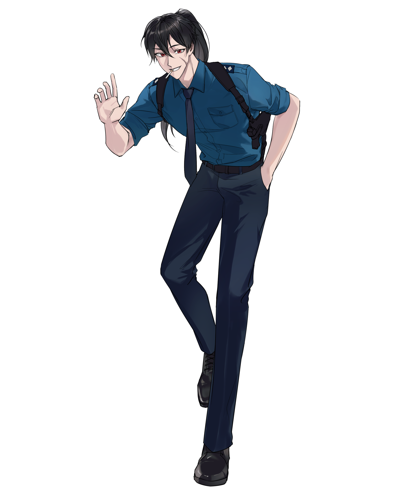

캐치 프레이즈
일단 날 믿고 맡겨!
한마디
“ 스탑! 당신은 묵지권을... 어, 맞나?! ”
외관
(chop님 cm)
어둠을 품고 있는 듯한 새카만 흑발을 한 갈래로 묶고 있으며 앞머리와 옆머리는 덮수룩한 편이다. 올려 묶은 머리를 풀어내리면 대략 골반까지 흘러내린다. 왼쪽 뺨에는 얕고 긴 흉터가 있는데, 무언가에 베였었던 듯, 누군가와의 싸움에서 얻은 것으로 추측된다. 푸른색을 띄는 와이셔츠와 어깨의 견장은 제복과 닮아 있고, 아래는 언제든 힘을 발휘할 수 있는 준비가 된 듯 뚜렷한 근육의 형상이 드러난다. 붉은눈은 그림자 속에서 더욱 이채를 담아 밝게 반짝인다. 얼굴은 항상 꺼트릴 줄 모르는 듯 입꼬리를 한껏 끌어올리고 환한 미소를 짓고 있다. 이는 자신감 넘치는 큼직한 행동과 잘 어우러져 쾌활한 인상을 준다.
이름
조롱목
나이
31
키/체중
180/73
성격
Keyword: 쾌활한, 오지랖 넓은, 어리버리한
쾌활한
“뭐라고요? 이런 나쁜 놈이! 진짜 지금 당장 가겠습니다!”
늘 에너지가 넘치는 듯 활기찬 모습으로 사람들 사이를 활보 한다. 웃음이 끊이질 않으며, 그 웃음 역시 대부분 환한 미소이다. 힘든 상황 속에서도 주먹을 불끈 쥐는 모습은 유쾌해 보이기까지 한다. 눈동자는 맑고 청아해 보이며, 항상 태양 같은 미소를 띄우며 마주치는 사람에게 손을 힘껏 흔들어 인사한다. 당차고 긍정적인 모습은 자유로운 영혼처럼 보인다. 아침 해가 떠오르고 물가에서 물방울이 반짝이는 것만 보아도 행복을 느끼는 것처럼, 어떤 어려움이 마주하더라도 희망의 씨앗을 심고 키우는 일을 전문으로 하는 것마냥 군다. 무기는 긍정과 활력이다. 절대 포기하지 말자는 말이 입버릇 같다.
오지랖 넓은
“요즘 힘들어 보이는데, 무슨 일 있어요? 도와줄까요?”
남에게 관심이 많고 오지랖이 넓다. 자신과는 전혀 관련 없는 남에게까지 관심을 기울이며 이야기를 듣고 참견하는 것을 좋아한다. 호기심이 많기 때문이기도 하고, 한 번 깊게 파고 들었던 일이라면 과하게 동정심을 드러내며 헌신적으로 도우려 들거나 해결하려 들었다. 힘들어 보이는 사람이 있다면 그냥 지나칠 수 없다. 가끔은 타인이 원하지 않는 상황에도 억지로 고개를 들이밀고 개입하려 들기도 해 문제를 야기하기도 했다.
어리버리한
“이, 이 손전등을 어떻게 키더라… 아직 제가 손전등 키는 훈련은 받지 못해서…”
주의가 산만하고 조심성 없이 행동하는 경향이 있다. 주변 상황을 잘 관찰하지 못하거나, 가끔 대화의 맥락을 놓쳐서 딴소리를 하기도 했다. 조금만 생각해보면 쉽게 해낼 수 있는 일임에도 허둥지둥 대다 놓치는 일이 허다하고, 밥을 먹다가 젓가락을 자주 떨어뜨리며 물컵을 자주 엎기도 했다. 아무것도 걸릴 게 없는 맨바닥에서 난데없이 넘어지는 일도 있었다. 물건을 주머니에 넣어놨거나 뻔히 손에 들고 있으면서도 잃어버렸다며 두리번거리며 찾기도 했다. 그런 면모가 가장 잘 드러날 때는 특히 길을 찾을 때인데, 맨날 살던 도시에서도 가끔 길을 잃어버리는 심각한 길치였다. 심각한 상황을 심각하게 여기지 않는 경향도 있다.
사교적인
“어? 우리 친구 아니었어요?! 같이 밥 먹어서 난 그런 줄…”
처음 얼굴을 보는 사이라 하더라도 낯가림이 없다. 이를테면 5분 전에 만난 사람과도 오랜 친구처럼 떠들 수 있다. 그의 눈은 항상 상대방을 주목하며 그들의 이야기에 귀를 기울인다. 말하면서도 듣는 것을 잊지 않고, 상대방이 밀쳐내거나 거부한다 하더라도 웃음으로 화답한다. 그는 다양한 사람들과 소통하는 것을 즐겼고, 새로운 사람들을 만나고 그들의 이야기를 들으며 자신의 세계를 넓히는 것을 좋아했다. 어려운 순간에도 끈기있는 지지와 조언을 주는 것은 그의 특기이다. 이해심과 포용력 또한 넓은 것인지, 웬만한 일은 그럴 수 있지 하고 넘겨버리는 일이 많다. 사실 대부분의 일에서 그렇다.
기타
지하철 탑승 전까지는 약속이 있었기에 순찰하듯 시내를 돌아다녔다. 마치 우연처럼 아는 친구를 만났고, 잠시 뒷골목에서 친구와 수다도 떨며 약속했던 볼일을 봤으며, 모든 일이 끝나고는 집으로 돌아가기 위해 사람이 많은 지하철로 향했다.
지하철 탑승 후에는 휴대폰을 꾸준하게 만지며 누군가에게 연락을 했다. 가끔 주위를 두리번거리며 살피기도 했다. 주위의 소란이나 사람들에게 신경 쓰진 않았으나, 가끔씩 흘끔거리기도 하는 모습을 보였다. 조금 특이한 복장을 입고 있었다는 것만 빼면 특별할 것 없는 행인이었으며, 어디까지 왔는지 지하철 역을 확인하며 문에 기대어 서 있었다.
가벼운 어투에 가벼운 어조, 존댓말이 기본이지만 가깝지 않아도 말을 쉽게 놓는다.
상대방의 눈을 부담스러울 정도로 뚫어져라 바라보며 시선을 맞추는 습관이 있다.
취미는 몸개그처럼 보이는 이상한 춤추기이나 남에게 보여주는 일은 없다.
특기는 카드게임으로, 트럼프나 화투 등 카드를 사용하는 게임이라면 다 잘한다.
최소한의 청결은 유지하지만, 머리는 자주 산발에 주위는 늘 난장판인 편이다.
좋아하는 것은 비, 담배, 돈이다.
싫어하는 것은 어둠, 거짓말, 콩밥이다.
소지품
무전기, 수갑, 권총
관계
-